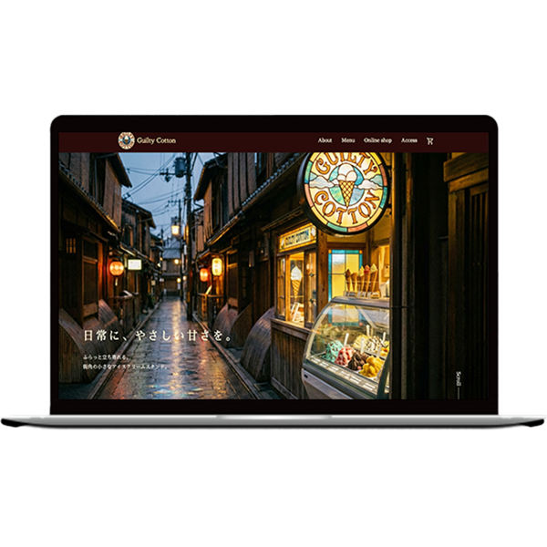

Guilty Cotton
サイトを見る▶
概要
学校の制作課題として制作した架空のアイススタンド「Guilty Cotton」のWebサイト。 駅近の路地にある小さなお店を想定し、気軽に立ち寄れる地域密着型のアイスショップ。
目的
サイトによる認知拡大に加え、来店前にフレーバーをゆっくり選べるようにすること、またオンラインショップとして自宅から購入できる導線を作ること。
ターゲット
25〜35歳の女性。
仕事帰りに「小さな日常のご褒美」としてアイスを購入し、気軽に楽しめる層を想定。
デザイン
シンプルな配色と控えめな動きを用いることでコンセプトに合った落ち着きを演出。
さらに、メニューではホバー時に商品が少し拡大する動きを加え視認性を高め、オンラインショップではカート追加時に「added」と表示することで操作結果が分かりやすいUI設計を意識しました。
制作期間
企画立案・デザインカンプ：約35時間
コーディング：約40時間
使用ソフト
Illustrator / Photoshop / Figma / Firefly / VS CODE
使用技術
HTML / CSS（レスポンシブ対応） / JavaScript（hover演出・カート追加時の表示）